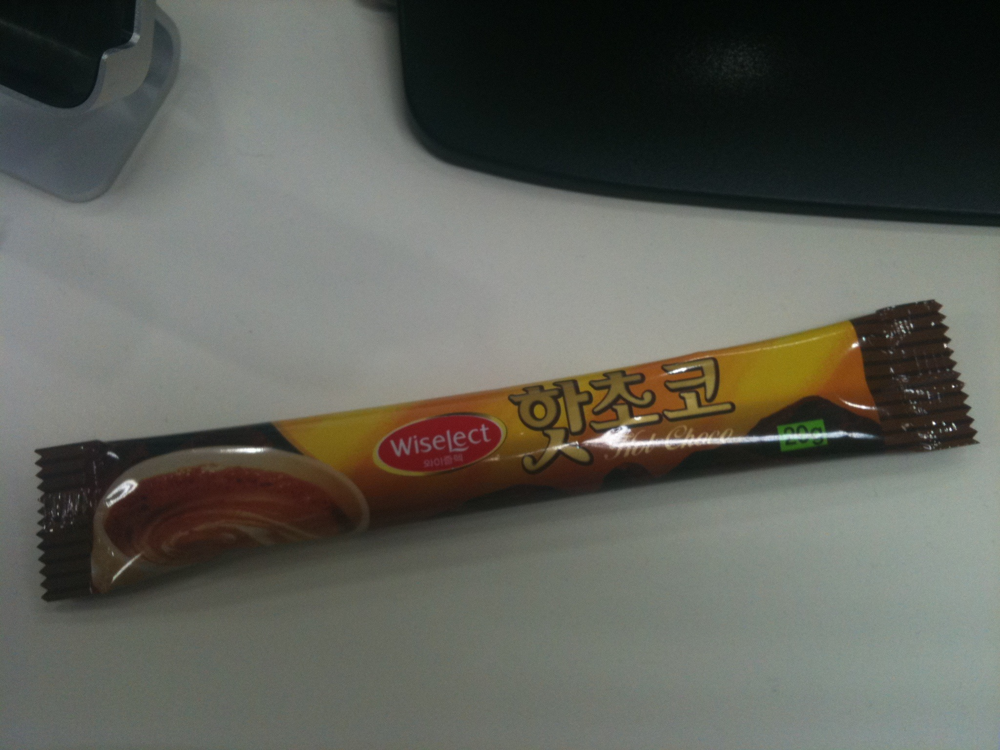
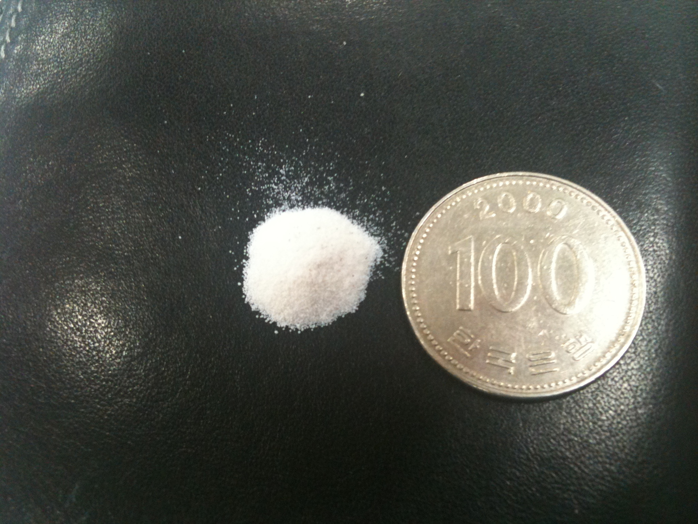
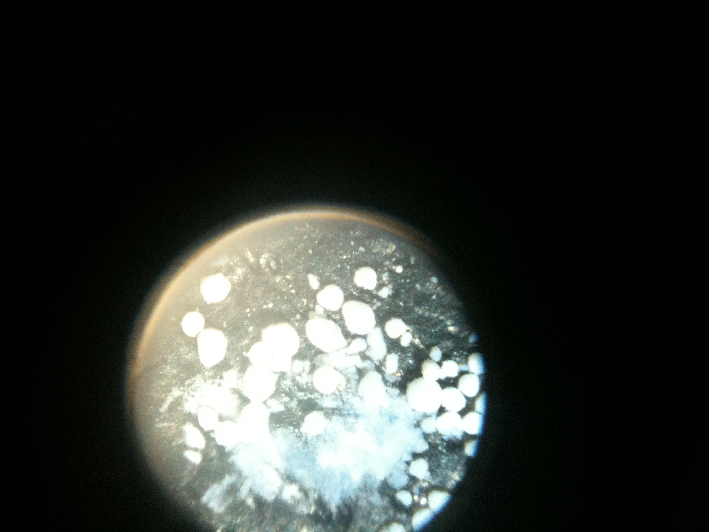

사무실에 비치된 코코아 믹스(상품명: 와이즐렉 핫초코)를 마시다보니 매번 컵 밑에 다소 꺼끌거리는 침전물이 남는것을 목격했다.
이것을 맑은 물로 수차례 걸러낸 결과 다음과 같은 무향무취의 백색 분말을 얻어낼 수 있었다.
먼저 실험에 사용된 와이즐렉 핫초코.

침전물에서 추출한 백색 분말.

100배 루뻬로 확대한 사진. (중앙부분은 면도날 옆면으로 눌러서 덩어리를 부숴놓았다.)

와이즐렉 핫초코 1봉 20g 에서 나온 침전물의 양이 의외로 많다. 눈짐작으로 0.5g 가량 되어보인다.
코코아 분말에 포함된 인체에 무해한 성분이라고 생각되지만 물에 녹지도 않는 성분이 물에 타먹는 핫초코에 들어있다는게 다소 찜찜하긴 하다.
참고로 '담터' 에서 나온 핫초코 제품에서는 이런 침전물이 보이지 않았다.
제품별로 정제과정이 달라서 나타나는 차이일것 같다.
분광기가 있으면 불꽃반응실험으로 성분을 검사해보고 싶지만 저렴한 프리즘분광기가 6만원선이라 일단 보류중이다.
그냥 뭔가 특이한 물질이 나왔다는것 뿐이지 이에 대해 별다른 의견은 없다.